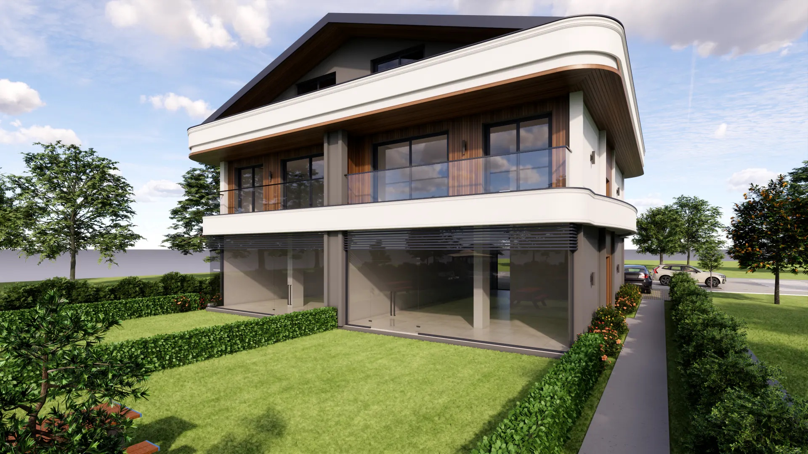
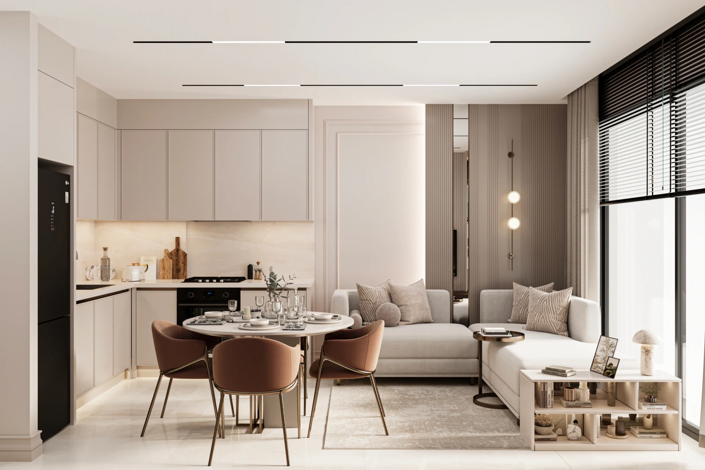

Tufan Properties
Center Garden
Babatasi, Fethiye

Dört daire ve iki ticari birimden oluşan küçük ölçekli bir proje. Geliştirici, daireler için özel bahçeler tanımlıyor.
01 / Görsellerle proje
Mekânları inceleyin.
Geliştiricinin proje galerisinden seçilen kaynak görseller.




02 / Proje bilgileri
Babatasi, Fethiye
İnşaat başladı · planlanan teslim Eylül 2027. Kaynak 6 Ekim 2026 tarihinde kontrol edildi; müsaitlik ve tarihler geliştirici tarafından teyit edilmelidir.
Satış iletişim bilgileriniz de aynı yerde
Bu örnek talep toplamamaktadır. Yayımlanan sunumda onayladığınız iletişim bilgileri ve başvuru bağlantıları yer alır.